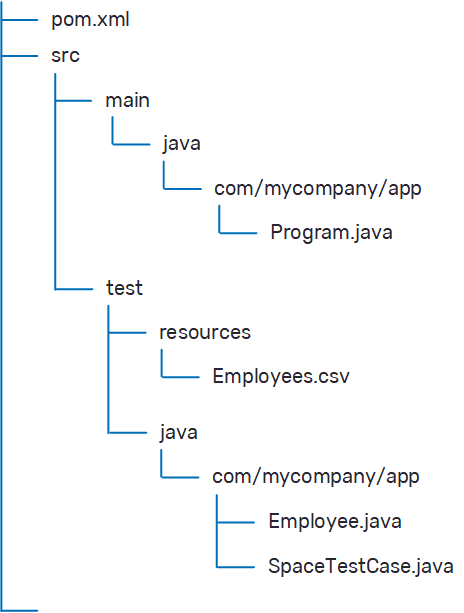

Interactive Shell
To start the interactive shell:
- Open a command window from the
After you launch the script, run the version command to try out the shell. This command prints version information, which you can use to verify that you are running the correct version.
Project Blueprints
blueprint list- displays a list of available blueprints.blueprint- displays a list of available blueprint commands.
Creating a Project
When you create a project, the blueprint leads you through an interactive work flow where you define a number of options as you create your configuration. Using only the default options in the work flow creates a client application that is configured to use the Space that is generated with it.
When you first begin to generate a blueprint-based project, you can give the project a name. We skip this in the example.
To create a project:
-
Type
blueprint generate. This begins the configuration work flow. - A list of available blueprints is displayed. Press Enter to select the default value (1=client).
- The next step is configuring the target path (folder name and location) for the client application files. Press Enter to select the default value (my-client in the product package bin folder).
- The client blueprint supports customizing several additional properties, but for now you should use the default values. Press Enter to skip the additional configuration.
-
The project is created, and the target path is displayed. You are prompted to open the project in your default file explorer.
Generated project from client at D:\InsightEdge\gigaspaces-insightedge-enterprise-Press Enter to view the project files.

Project Structure
The project that is created by the client blueprint has the following structure:

Where:
- pom.xml - a standard Maven project descriptor that contains a single Maven dependency on
xap-openspace. - Program.java - a simple Java program with a
mainmethod that demonstrates how to connect to an existing Space or how to create an embedded Space. - employees.csv - a test resource file with sample data.
- Employee.java - a POJO file that contains the employee data model.
- SpaceTestCase.java - a unit test that loads employee data from the resource file, writes the data to the Space, and performs various Space operations.
For more information about using Maven with
Building and Running the Project
From the Command Line
To build the project:
-
Open a shell from the my-client folder.
-
Run the following command to build the project and run the test (as shown in the shell output). The test demonstrates how to write data to the grid, and how to read from the data grid.
mvn package
In Your Development Environment
You can open any standard Java IDE (for example, Eclipse or IntelliJ IDEA) and import the project using the pom.xml file. After the project is imported, you can run or debug it, and experiment with changing the test to become more familiar with the Space API.
Connecting Your Application to an Existing Space
Starting a Service Grid
A data grid in a local environment is hosted on a service grid. The service grid is comprised of one or more machines (service grid nodes) running a Grid Service Agent (or GSA), and provides a framework to deploy and monitor applications on the data grid.
To start the service grid:
-
To start a service grid with 4 containers, navigate to
Running a Service Grid on a Single Server
Service Grid can also be run on a single server which can be accessed by remote users.
gs host run-agent --auto creates the manager using the localhost. Other computers will not be able to access it.
For running on a single server, follow these steps:
-
Modify the
Set the GS_MANAGERS_SERVERS to the hostname.
It is highly recommended to set the GS_NIC_ADDRESS to the IP address of the host.
-
To start the Service Grid
run gs.(sh|bat) host run-agent --manager --webuse --gsc=4
Deploying the Data Grid
After you launch a service grid, you can deploy a data grid and begin to use it.
To deploy the data grid:
-
Open a command window, navigate to
This command deploys a data grid (aka Space) called myGrid with 2 partitions and 1 backup per partition.
Interacting with the Data Grid
After the data grid has been deployed, you can run your project again. To connect to the existing Space, change the default Space name to the name of the Space you just created.
To run the project again:
- Navigate to my-client and type the following in the command line:
./run.sh myGrid
.\run myGrid